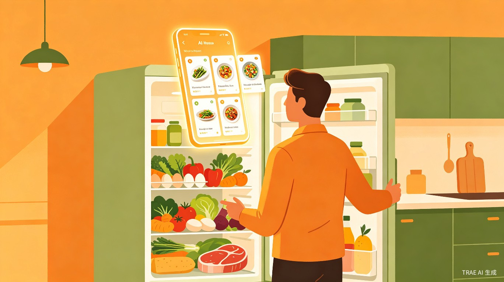
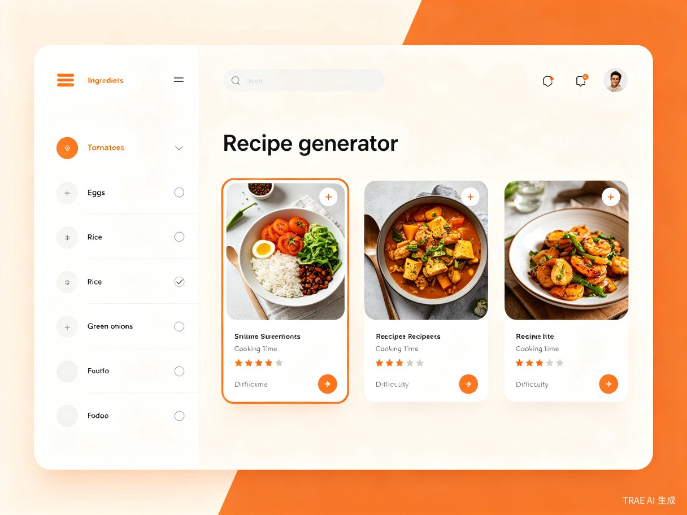
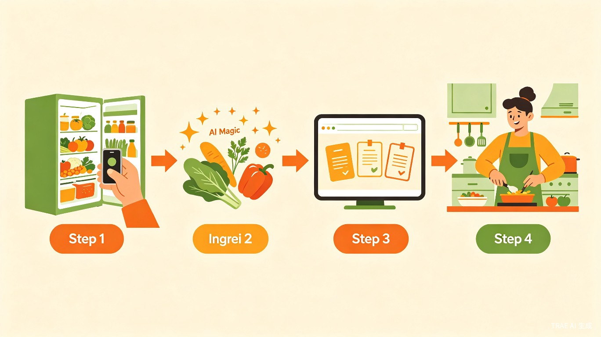

生活娱乐赛道
Web 应用
基于 TRAE Work 构建
一、创意名称与介绍
创意名称
食材灵感 — 一款基于 AI 的冰箱食材智能搭配与食谱生成工具
想解决什么问题
每天到了饭点，打开冰箱看着一堆食材却不知道做什么菜，最后要么点外卖、要么随便煮碗面凑合。日积月累，冰箱角落的食材过了保质期才被发现，造成大量浪费。
为什么会想到做这个
我自己就是典型的"冰箱囤货党"，经常买了很多菜却不知道怎么搭配，导致食材浪费严重。身边很多朋友也有同样的困扰。如果能有一个工具，告诉我"冰箱里这些东西能做什么好吃的"，做饭这件事会变得轻松很多。
大概是什么产品
一个 Web 应用，用户拍照或手动输入冰箱里现有的食材，系统自动推荐可做的菜谱，并支持按口味偏好、烹饪时间、营养需求进行筛选排序。
二、目标用户及痛点
面向哪些用户
- 独居年轻人 — 想自己做饭但缺乏经验和灵感
- 上班族 — 时间有限，需要快速决定做什么菜
- 家庭主厨 — 需要消耗冰箱剩余食材，减少浪费
- 厨房新手 — 不知道从何下手，容易放弃做饭
在什么场景下使用
- 每天饭点前不知道吃什么时
- 冰箱里剩余零散食材需要消耗时
- 想尝试新菜式但不知道买什么菜时
- 想规划一周菜单、减少重复菜品时
当前痛点
- 有食材但不知道能做什么菜，缺乏搭配灵感
- 网上搜菜谱需要逐个查看食材清单，费时费力
- 食材过期才发现，造成不必要的浪费
- 新手不知道从何下手，容易放弃做饭
三、核心功能
📸
拍照识别食材
打开冰箱拍一张照，AI 自动识别冰箱里的食材种类和数量
🤖
智能菜谱推荐
根据已有食材，智能匹配可做的菜谱，按匹配度、口味、耗时排序
📋
一周菜单规划
自动生成一周买菜计划和每日菜单，告别"今天吃什么"的纠结
🥗
营养均衡分析
分析推荐菜谱的营养搭配，帮助用户养成健康饮食习惯

四、用户使用流程

核心体验：3 步搞定今晚吃什么
第 1 步：拍照或手动输入冰箱里的食材
第 2 步：AI 自动分析并推荐可做的菜谱
第 3 步：选择喜欢的菜谱，查看详细做法，开始烹饪
五、价值与意义
减少食材浪费
帮助用户优先消耗冰箱现有食材，减少过期浪费，响应绿色低碳生活方式
降低做饭门槛
让不会做饭的人也能轻松上手，提升生活品质和幸福感
提升饮食健康
根据营养均衡原则推荐菜谱，帮助用户养成健康饮食习惯
六、技术方案
基于 TRAE Work 构建
本产品将使用 TRAE Work 进行开发，充分利用其 AI 原生能力：
- 前端界面：使用 HTML/CSS/JavaScript 构建响应式 Web 应用
- AI 能力：调用大语言模型进行食材识别、菜谱匹配和营养分析
- 交互体验：支持拍照上传、手动输入、语音输入等多种交互方式
- 数据存储：使用本地存储保存用户偏好和历史记录